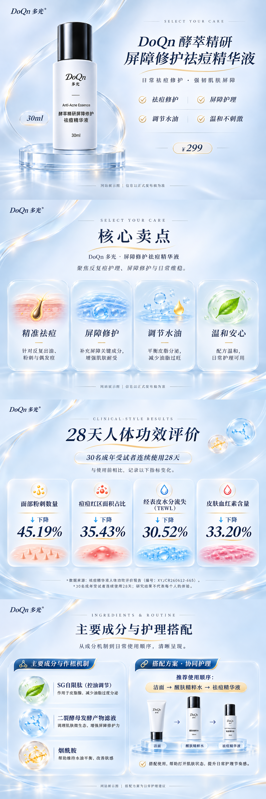

祛痘、修护、保湿、舒缓。具体功效以产品备案资料为准。
ACNE CARE / 211
给反复痘肌，
一套温和日常护理。
面向反复出油、粉刺与偶发痘的日常护理。把祛痘、修护、保湿与舒缓纳入同一套护肤步骤。
屏障修护祛痘精华液 · 30 ml · 日常护肤使用
45.19%28 天人体评价
粉刺数量较使用前下降
粉刺数量较使用前下降

为日常护理，选择适合自己的节奏
痘肌护理 · DoQn 多光
现有资料列示烟酰胺与二裂酵母发酵产物滤液。
28 天评价中粉刺数量较使用前下降 45.19%，经皮水分流失值下降 30.52%。

数据来源：现有产品人体功效评价资料。30名成年受试者连续使用28天；结果不代表每个人的体验，不应解读为治疗效果。 具体功效、使用方法与注意事项以对应产品备案资料及包装说明为准。